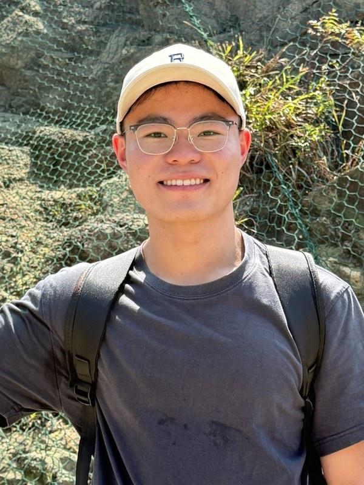
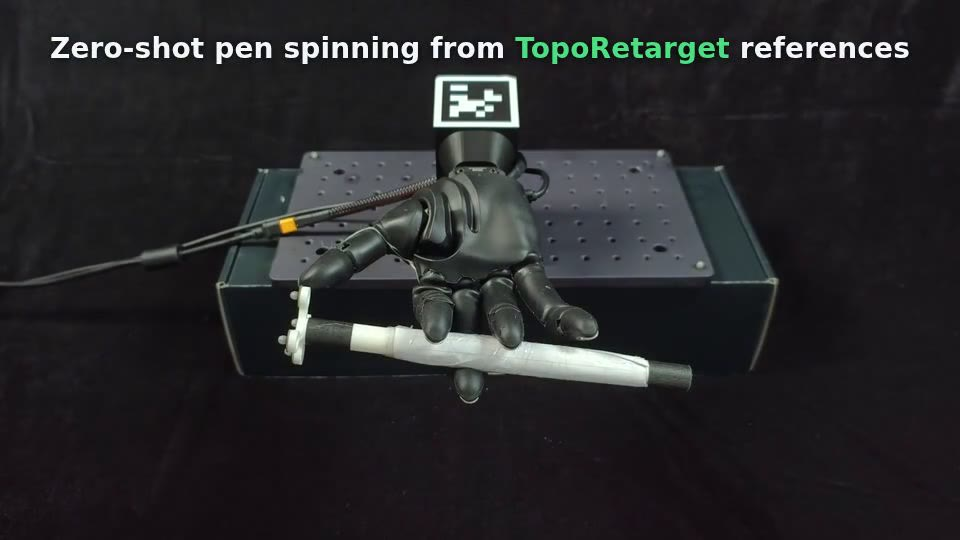

Han Yang 杨涵
Southern University of Science and Technology, Master Student.
Email: 12532527 [at] mail.sustech.edu.cn

I am a master student in Electronic Science and Technology at Southern University of Science and Technology (SUSTech). I received my bachelor's degree in engineering from SUSTech in 2025.
My research interests lie in robotic manipulation, especially dexterous and contact-rich manipulation.
News
| 2026-06-15 | TopoRetarget is released for interaction-preserving retargeting in dexterous manipulation. |
| 2026-05-27 | SCSP is released for contact-rich manipulation with cascaded optimization. |
Publications
* denotes equal contribution.

CoRL 2026Education
| 2025.09 – Present | Southern University of Science and Technology M.S. in Electronic Science and Technology |
| 2021.09 – 2025.07 | Southern University of Science and Technology B.Eng. in Information Engineering |